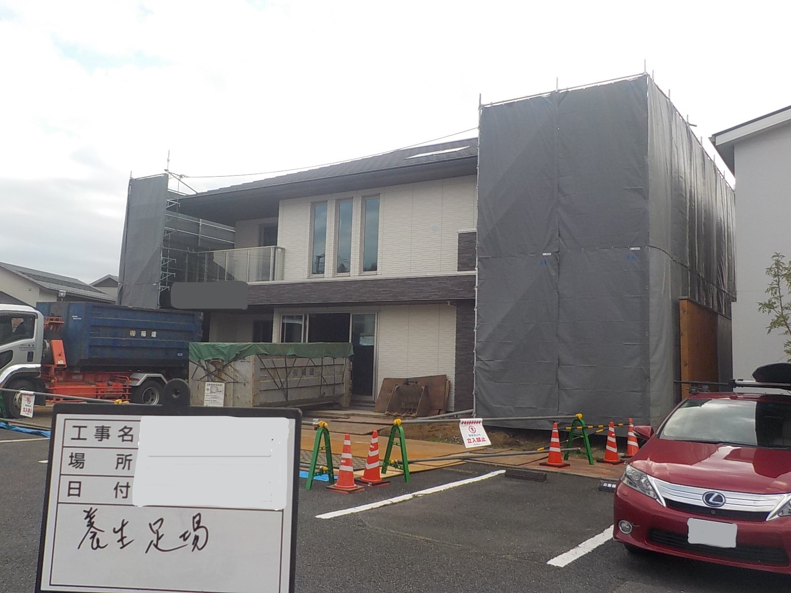
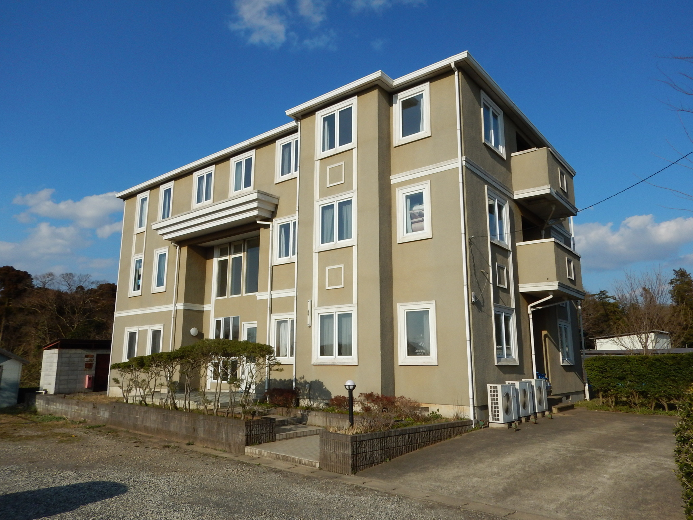
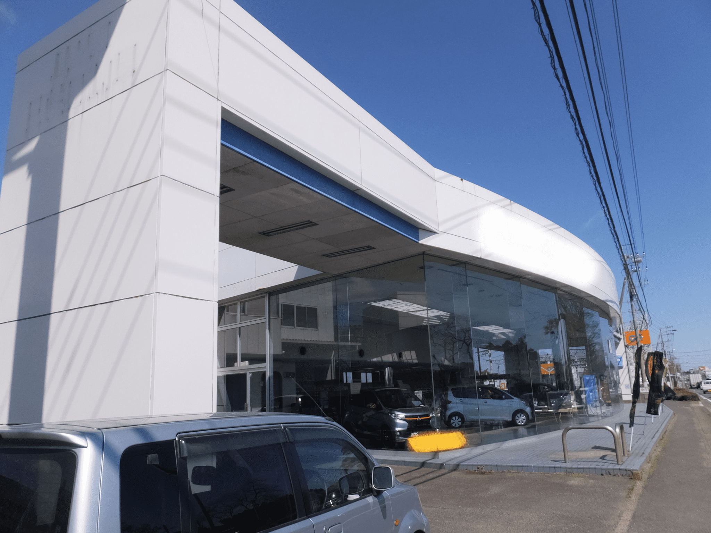
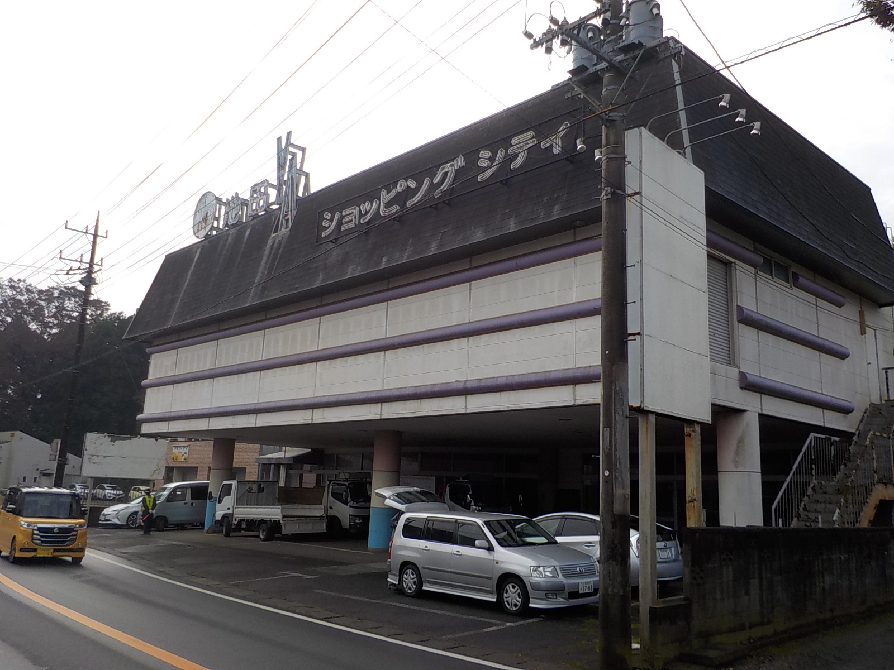
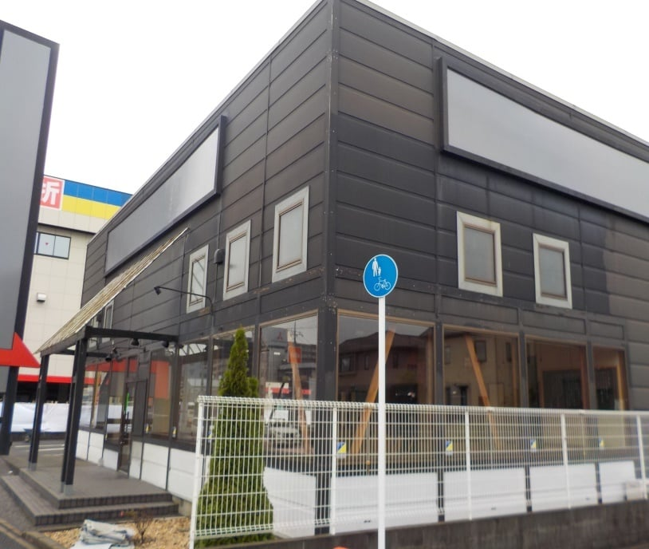
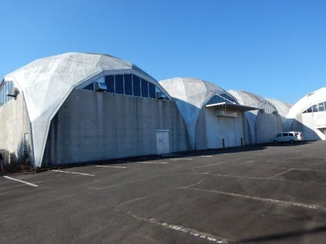
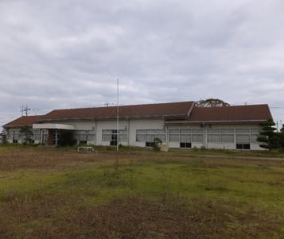
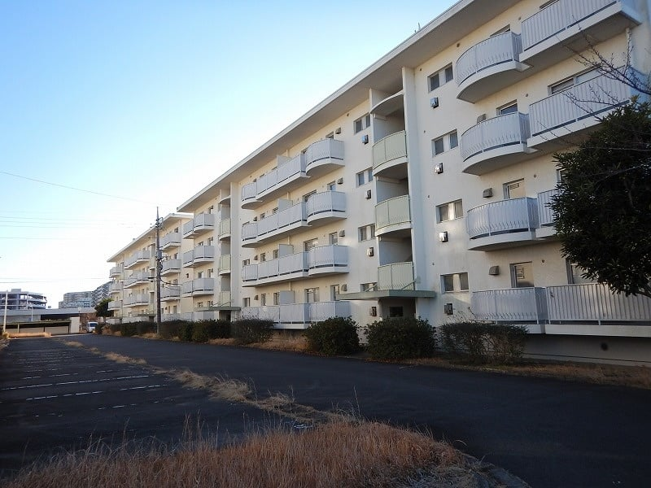
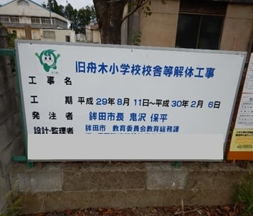

展示場 解体工事
鉄骨造4階建の建物解体。仮設足場と散水による粉じん抑制を徹底した施工。
鉄骨造 / 成田市 / 1330坪施設種別・工法・安全対策・廃棄物処理の要点まで分かる主な実績。

鉄骨造4階建の建物解体。仮設足場と散水による粉じん抑制を徹底した施工。
鉄骨造 / 成田市 / 1330坪
木造3階建の独身寮解体。隣接建物との距離が近い現場での安全な解体作業。
木造3階建 / 八街市 / 162坪
鉄骨造（S造）店舗の総合解体工事。大型重機を用いた効率的かつ迅速な施工。
S造 / 香取市 / 382坪
鉄骨造店舗の解体およびアスベスト等の付帯物質の事前調査・分別処理。
S造 / 多古町 / 234坪
木造店舗建物の解体および外構撤去。丁寧な近隣配慮と確実な整地引き渡し。
木造 / 八千代市 / 80坪
鉄骨造工場の建物および付帯設備解体。マニフェストに基づく産業廃棄物の適正処理。
S造 / 行方市 / 310坪
公共事業としての旧分校校舎解体。環境認証エコアクション21に基づき適正管理。
木造・RC造 / 公共事業 / 150坪
鉄筋コンクリート造（RC造）社宅の解体。コンクリートガラの現地破砕と搬出。
RC造 / 成田市 / 280坪
旧小学校校舎、屋内運動場、プールの解体撤去および跡地の整地作業。
RC造 / 公共事業 / 550坪これまでに手がけた主な施工実績を、構造・規模・施設種別ごとにご紹介します。
構造: 鉄骨造4階建 2棟 / 規模: 665坪 x 2棟
構造: 木造3階建 / 規模: 162坪
構造: 鉄骨造 / 規模: 382坪
構造: 鉄骨造 / 規模: 234坪
構造: 木造1階建 / 規模: 80坪
構造: 鉄骨造 / 規模: 310坪
構造: 木造・RC造 / 規模: 150坪
構造: RC造3階建 / 規模: 280坪
構造: RC造2階建、屋内運動場、プール / 規模: 校舎430坪、運動場120坪
機密保持等の理由で具体的な現場名を出せない場合でも、構造・規模・課題・対応内容を詳細に整理し、ご相談の参考になるよう掲載しています。
既存資料、作業範囲、養生計画、搬出動線を踏まえた記録管理。
構造、周辺道路、近隣施設、車両動線を整理し、朝礼・KY活動・道路清掃を含めて安全に進めます。
撤去範囲、残置物、搬出ルート、産廃処理を含む短期工程対応。